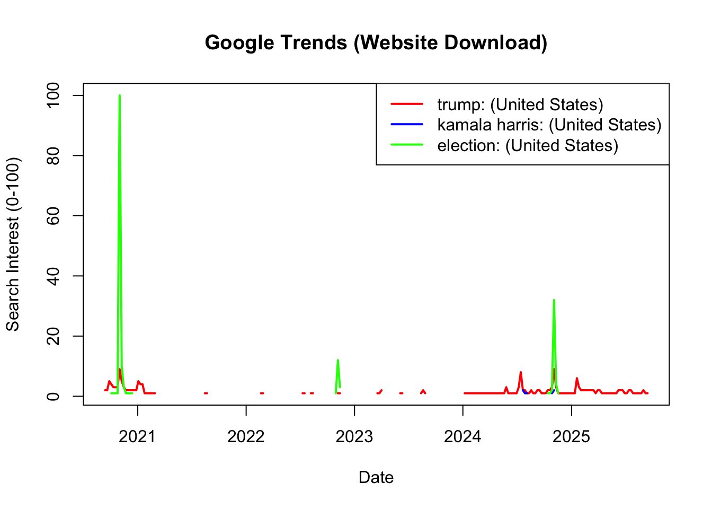

# A tibble: 6 × 4
Week `trump: (United States)` `kamala harris: (United States)`
<date> <chr> <chr>
1 2020-09-13 2 <1
2 2020-09-20 2 <1
3 2020-09-27 5 <1
4 2020-10-04 4 <1
5 2020-10-11 3 <1
6 2020-10-18 3 <1
# ℹ 1 more variable: `election: (United States)` <chr>